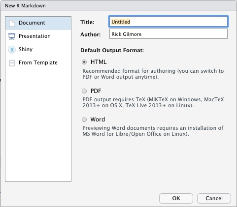
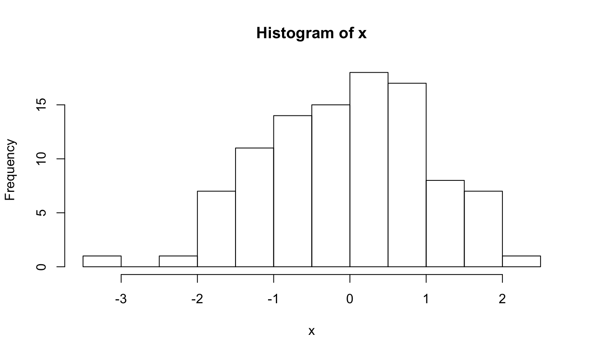
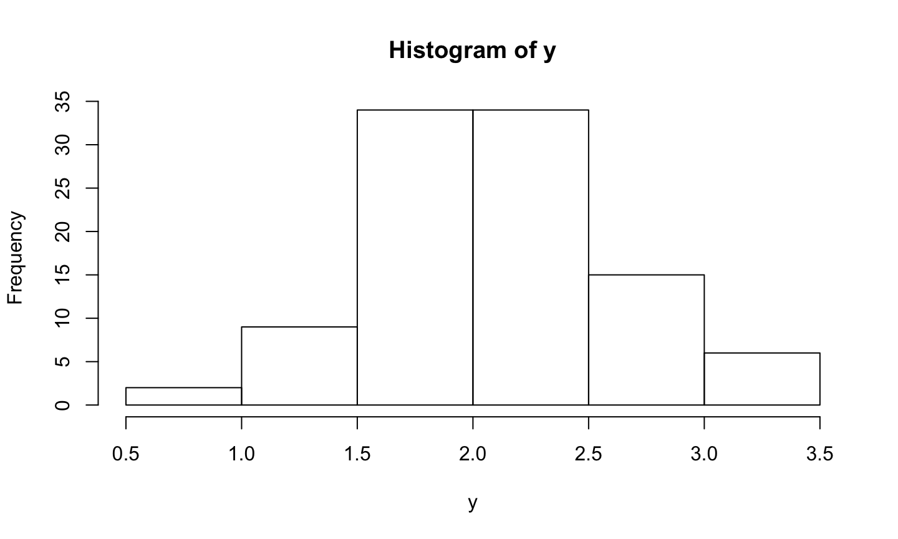
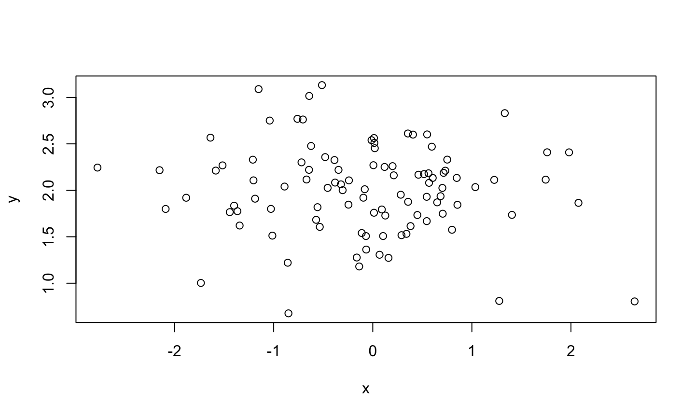

2020-02-12 16:25:33
Preliminaries
Announcements
- Friday February 7, 2020 - “Best Practices of Maintaining a Lab Notebook to improve Accountability”, Melissa Ishler, Ph.D. Department of Entomology, The Pennsylvania State University, 11:15 am to 12:05 pm. 127 Noll Laboratory, Host: Department of Kinesiology
- Institute for Computational and Data Science (ICDS) events
- “The Data Deluge”, ICDS Symposium, March 16-17, 2020, NLI.
Today’s agenda
- Registration
- What, why, who, how?
- Tools for reproducible workflows
- Introduction to RStudio
- Introduction to R Markdown
- Doing real work with R Markdown
Registration
Registered reports
- What are they?
- Why are they a thing?
- Who’s doing them?
- How they work and how to get involved
What are they?
- Peer review and provisional acceptance of methodologically sound study proposals
Why registered reports?
- Results (positive or null) don’t determine publication (prevent publication bias)
- Reduce questionable practices
- p-hacking
- HARKing
Why not registered reports
- Restrict creativity in reporting “un-registered”/exploratory analyses?
- Clearer communication about confirmatory vs. exploratory
- Mandatory vs. optional
- Clinical trials vs. fundamental research
- Exploration is not a dirty word
Who’s doing them?
- Journals with Registered Reports from COS
- How do they work?
- Google sheet comparing features https://docs.google.com/spreadsheets/d/1D4_k-8C_UENTRtbPzXfhjEyu3BfLxdOsn9j-otrO870/edit#gid=0

Preregistration separate from publication
AsPredicted.org
- Standardized preregistration tool
- Separate confirmatory from exploratory analyses
- One author completes checklist, others receive email to approve
- Unique (private) URL to pdf
- Share when you like or never
Your thoughts on registered reports, pregistration?
Tools for reproducible workflows
RStudio
- An integrated development environment (IDE) for R
Components of RStudio
- Code editor
- R console
- Integrated help
- Image viewer
- Integration with git and other version-control packages
- Project management
R Markdown
- Markdown
- Mark-up language to make it easy to write HTML
- R Markdown a special type of Markdown
- Allows for “literate” programming, mixing text, analysis, figures
- Adds to Markdown syntax
Let’s do this…
- Open up RStudio
- Create a new R Markdown document
File/New File/R Markdown...

- Select
Document, call it something sensible likepsy-525-rmarkdown-testbed- NB: This is the document’s title not the name of the file.

- Save the file as
testbed.Rmd
Anatomy of an R Markdown file
- Header
- Chunks
- Text, etc.

Markdown syntax
- Text formatting
- italics by surrounding text with single asterisks or underscores:
*italics*or_italics_ - boldface by surrounding text with double asterisks or underscores:
**boldface**or__boldface__
- italics by surrounding text with single asterisks or underscores:
- Text formatting
strikethroughby surrounding text with double tildes:~~strikethrough~~- Clickable URLs by surrounding link text with square brackets and URL with parentheses:
[Clickable URLs](http://www.psu.edu)
Markdown syntax
- Paragraph formatting
- Headings with level specified by the number of hash (#) marks
- Lists (bullet and enumerated)
- Block quotes
- Code blocks
# This is a Heading 1 ## This is a Heading 2 ### This is a Heading 3
Code:
- An item
- A nested item
- A doubly-nested item
- Another item
- An item
- A nested item
- A doubly-nested item
- A nested item
- Another item
Code:
1. An enumerated item
- A nested item
1. A second enumerated item
- An enumerated item
- A nested item
- A second enumerated item
Notice how the numbers are incremented automatically!
Learn from my mistakes…
<CTRL>+2goes to console<CTRL>+1goes to source<UP-ARROW><RETURN><COMMAND><ALT>+I(Mac OS);<CTRL><ALT>+I(Windows) inserts a chunk- Train your fingers now!
Code:
> Four score and seven years ago, some famous President > spoke infamous words that would live on throughout history. > These words are famous enough that I want to highlight them with a block quote.
Four score and seven years ago, some famous President spoke infamous words that would live on throughout history. These words are famous enough that I want to highlight them with a block quote.
More on Markdown syntax
- Images can be inserted using this syntax
 - Comments – won’t print in rendered output –
<!- This is a comment ->
R Markdown additions
.Rmdextension- Combine text, code, images, figures, video
- “Computable” reports, documents, slide shows, notebooks
- Code in “chunks”
- Output in multiple formats from the same file
Make some data
Code (in a chunk):
```{r}
x = rnorm(n = 100, mean = 0, sd = 1) # N(0,1)
y = rnorm(n = 100, mean = 2, sd = 0.5) # N(2, 0.5)
```
Summary of x, y
Code (in a chunk):
```{r}
summary(x)
summary(y)
```
## Min. 1st Qu. Median Mean ## -2.98124 -0.67448 -0.03216 -0.05013 ## 3rd Qu. Max. ## 0.49362 2.74005
## Min. 1st Qu. Median Mean 3rd Qu. ## 0.8498 1.7560 2.0870 2.0872 2.4222 ## Max. ## 3.2645
Histogram of x
Code (in a chunk):
```{r}
hist(x)
```

Histogram of y
Code (in a chunk):
```{r}
hist(y)
```

X vs. Y
Code (in a chunk):
```{r}
plot(x,y)
```

Embed a figure using “chunk” syntax
Code (in a chunk):
```{r rog, fig.cap="Rick's pic from Databrary"}
knitr::include_graphics("https://nyu.databrary.org/party/6/avatar")
```
Rick’s pic from Databrary
Embed a figure using HTML
Code (outside a chunk):
<img src="img/sleic.jpg" height=500px>
Height parameter (or, e.g. height=500px) is optional, but useful. Remember Markdown -> HTML.
Learn from my mistakes
- Don’t change your working directory…EVAH!
- Give R Markdown document “local” paths
- Projects (next week) make this MUCH easier
- Talk to R inside chunks; talk to RStudio outside chunks
- Save your R Markdown file often
Embed a YouTube video
HTML Code (outside a chunk–not talking to R)
<iframe width="420" height="315" src="https://www.youtube.com/embed/9hUy9ePyo6Q" frameborder="0" allowfullscreen> </iframe>
- YouTube gives you code to cut and paste to ‘embed’ a video.
- Just copy and paste
Printing computed variables in your text
Code (in a chunk):
```{r}
summ.x = summary(x)
summ.y = summary(y)
names(summ.x) # Figure out variable names for indexing
```
## [1] "Min." "1st Qu." "Median" "Mean" ## [5] "3rd Qu." "Max."

- Prefix inline code bits with “`r”
- Terminate inline code bits with single backtick “`”
- No more copying and pasting statistical results!
- Format numeric outputs with
sprintf() sprintf("%2.3f", 14.7666)gives 14.77- See
help("sprintf")
Index by variable name: X lies within the range of [-2.9812423, 2.7400503].
Index by numeric index: The (y-x) difference in means is 2.1373676.
Calculate and report: The correlation between x and y is -0.0483962.
Math equations
Markdown (not in a chunk–not talking to R) using LaTex syntax.
$$e=mc^{2}$$
\[e=mc^{2}\]
Doing real work with R Markdown
Use cases
- You want to give a talk based on your analysis
- You want to give a collaborator a report on your analysis in a format they prefer
- You don’t want to duplicate effort
Output options
- Document
- HTML
- Embedded or non-embedded figures
- MS Word
- HTML
- Presentation
- HTML (ioslides)
- HTML (Slidy)
- PDF (Beamer)
- Shiny (interactive document)
- Document
- Presentation (ioslides)
- A website!
All in your head(er)
- R Markdown documents have header text written in YAML
- YAML = YAML Ain’t Markup Language
---
title: "psy-525-rmarkdown-testbed"
author: "Rick Gilmore"
date: "2020-02-12 16:25:34"
output:
html_document:
self_contained: true
word_document:
fig_width: 5
fig_height: 5
fig_caption: false
df_print: kable
pdf_document: default
ioslides_presentation: default
powerpoint_presentation: default
---
Learn from my mistakes
- YAML syntax is specific
- Yes, the tabs and colons matter
- You can
have fun/waste a lot of time exploring YAML options
- OTOH, chunk options are super useful
echo=TRUEprints your R codeecho=FALSEruns but does not print your code;include=FALSEdoes also.eval=FALSEprevents a chunk from executing
‘Knitting’ vs. ‘Rendering’ your document
- Pressing the
knitbutton converts your document to the default format - That is, the first format after your
output:parameter - Pressing and holding the
knitbutton gives other options knitris an R package that R Markdown depends upon heavily
Rendering your document
In the console (not your R Markdown document):
> rmarkdown::render("testbed.Rmd")
Why render?
- Saves time when editing interactively
- Render, then switch to browser (alt-tab or command-tab)
- Refresh browser
- Give documents parameters, like which output(s) you want
In the console:
> rmarkdown::render("testbed.Rmd",
output_format = c("html_document", "word_document", "pdf_document"))
Makes copies in three different formats: testbed.html, testbed.docx, and testbed.pdf.
Other useful parameters for the rmarkdown::render() command
output_file = myslides.ioslides.htmloroutput_file = myslides.slidy.htmlto specify different output file targets.output_dir = reportsoroutput_dir = docxto direct output to a specific directory.- parameterized reports using
params:
In your header:
--- title: "psy-525-rmarkdown-testbed" author: "Rick Gilmore" date: "2020-02-12 16:25:34" output: html_document: default params: name: Joe quest: "to find the Holy Grail" ---
- Single words don’t require quotes; phrases with spaces do
In the console (for example):
> rmarkdown::render("testbed.Rmd", params=list(name="Francine"))
Some useful sets of YAML header parameters…
Make a self-contained HTML file that includes any plots you’ve made or graphics you’ve embedded. Great for sharing locally (i.e, as a document not over the web).
---
output:
html_document:
self_contained: true
---
Add a table of contents. toc_depth controls how “deep” into your header hierarchy the table of contents should go.
---
output:
html_document:
toc: true
toc_depth: 2
---
Add toc_float: true to make the table of contents “float” to the side of your document.
---
output:
html_document:
toc: true
toc_depth: 2
toc_float: true
---
Add number_sections: true to make the table of contents automatically generate a hierarchical set of numbers–1.0, 1.2, 2.1, etc.–based on your header hierarchy. Remember, # is header 1, ## is header 2, etc.
---
output:
html_document:
toc: true
toc_depth: 2
toc_float: true
number_sections: true
---
Include your code chunks (include = TRUE) but hide them until someone wants to see them by adding code_folding: hide to your YAML header.
---
output:
html_document:
toc: true
toc_depth: 2
toc_float: true
number_sections: true
code_folding: hide
---
Questions?
Your turn…
Next time
- RStudio projects
- Version control using git and GitHub
Resources
Software
This talk was produced on 2020-02-12 in RStudio using R Markdown. The code and materials used to generate the slides may be found at https://github.com/psu-psychology/psy-525-reproducible-research-2020. Information about the R Session that produced the code is as follows:
## R version 3.6.2 (2019-12-12) ## Platform: x86_64-apple-darwin15.6.0 (64-bit) ## Running under: macOS Mojave 10.14.6 ## ## Matrix products: default ## BLAS: /System/Library/Frameworks/Accelerate.framework/Versions/A/Frameworks/vecLib.framework/Versions/A/libBLAS.dylib ## LAPACK: /Library/Frameworks/R.framework/Versions/3.6/Resources/lib/libRlapack.dylib ## ## locale: ## [1] en_US.UTF-8/en_US.UTF-8/en_US.UTF-8/C/en_US.UTF-8/en_US.UTF-8 ## ## attached base packages: ## [1] stats graphics grDevices utils ## [5] datasets methods base ## ## other attached packages: ## [1] DiagrammeR_1.0.5 forcats_0.4.0 ## [3] stringr_1.4.0 purrr_0.3.3 ## [5] readr_1.3.1 tidyr_1.0.0 ## [7] tibble_2.1.3 tidyverse_1.3.0 ## [9] lme4_1.1-21 Matrix_1.2-18 ## [11] dplyr_0.8.3 ggplot2_3.2.1 ## ## loaded via a namespace (and not attached): ## [1] Rcpp_1.0.3 lubridate_1.7.4 ## [3] tufte_0.5 lattice_0.20-38 ## [5] visNetwork_2.0.9 assertthat_0.2.1 ## [7] digest_0.6.23 packrat_0.5.0 ## [9] R6_2.4.1 cellranger_1.1.0 ## [11] plyr_1.8.5 backports_1.1.5 ## [13] reprex_0.3.0 evaluate_0.14 ## [15] httr_1.4.1 highr_0.8 ## [17] pillar_1.4.3 rlang_0.4.4 ## [19] lazyeval_0.2.2 readxl_1.3.1 ## [21] minqa_1.2.4 rstudioapi_0.10 ## [23] nloptr_1.2.1 rmarkdown_2.1 ## [25] labeling_0.3 splines_3.6.2 ## [27] pwr_1.2-2 htmlwidgets_1.5.1 ## [29] munsell_0.5.0 broom_0.5.3 ## [31] compiler_3.6.2 modelr_0.1.5 ## [33] xfun_0.12 pkgconfig_2.0.3 ## [35] htmltools_0.4.0 tidyselect_1.0.0 ## [37] codetools_0.2-16 fansi_0.4.1 ## [39] crayon_1.3.4 dbplyr_1.4.2 ## [41] withr_2.1.2 MASS_7.3-51.5 ## [43] grid_3.6.2 nlme_3.1-142 ## [45] jsonlite_1.6 gtable_0.3.0 ## [47] lifecycle_0.1.0 DBI_1.1.0 ## [49] magrittr_1.5 scales_1.1.0 ## [51] cli_2.0.1 stringi_1.4.5 ## [53] farver_2.0.3 reshape2_1.4.3 ## [55] fs_1.3.1 xml2_1.2.2 ## [57] vctrs_0.2.2 generics_0.0.2 ## [59] boot_1.3-23 RColorBrewer_1.1-2 ## [61] tools_3.6.2 glue_1.3.1 ## [63] hms_0.5.3 yaml_2.2.0 ## [65] colorspace_1.4-1 rvest_0.3.5 ## [67] knitr_1.27 haven_2.2.0